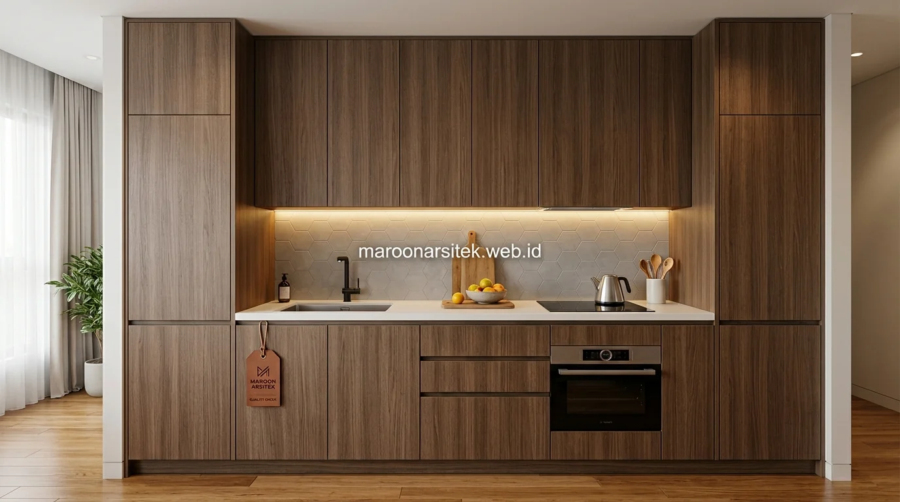

Keterbatasan luas lahan pada hunian modern di kawasan perkotaan sering kali membatasi kenyamanan jika penataan ruang dan furniturnya tidak direncanakan dengan tepat. Menggunakan layanan jasa desain interior custom memberikan keleluasaan penuh untuk menghadirkan solusi penyimpanan rapi (*storage solutions*) yang presisi mengikuti setiap lekuk dan dimensi ruang hunian Anda.
Solusi Desain Interior untuk Ruang Sempit dengan Kebutuhan Penyimpanan Tinggi
Ruang sempit dengan kebutuhan penyimpanan tinggi memerlukan pendekatan desain yang berbeda dari ruang standar, karena setiap sudut perlu dimanfaatkan tanpa membuat ruangan terasa sesak secara visual.
- Pemanfaatan ruang vertikal secara optimal: Merancang lemari atau rak kabinet hingga mendekati plafon (full-height storage) untuk memaksimalkan kapasitas simpan tanpa memakan luas lantai yang berharga.
- Desain furniture multifungsi: Menghadirkan tempat tidur berkonsep platform dengan laci penyimpanan di bagian bawah, sofa bed dengan kompartemen rahasia, atau meja kerja lipat dinding.
- Pemanfaatan sudut mati (dead corner): Mengubah sudut ruangan yang tidak simetris menjadi lemari sudut L-shaped dengan mekanisme rak putar (*carousel tray*) yang mudah diakses.
- Penggunaan pintu geser (sliding door): Mengganti pintu lemari model ayun (*swing*) dengan sistem pintu geser untuk menghemat ruang koridor bukaan pintu pada kamar sempit.
- Aplikasi cermin dan palet warna netral: Menempatkan aksen cermin pada pintu lemari serta memilih warna terang (warm white, beige, light oak) untuk memantulkan cahaya dan menciptakan ilusi ruangan yang lebih lapang.
Pendekatan ini umumnya diterapkan pada kamar tidur utama, kamar tidur anak, ruang kerja apartemen, atau area penyimpanan tambahan yang memiliki keterbatasan luas namun tetap memerlukan kapasitas penyimpanan yang memadai untuk kebutuhan sehari-hari.
Wardrobe Custom yang Disesuaikan dengan Ukuran Kamar
Wardrobe custom dirancang mengikuti ukuran dan bentuk kamar yang sebenarnya, sehingga dapat memanfaatkan ruang secara maksimal dibanding wardrobe jadi yang tersedia dalam ukuran standar pabrik.
- Pengukuran dimensi ruang secara akurat: Menyesuaikan tinggi plafon, kemiringan balok struktur, dan posisi sakelar listrik sebelum desain wardrobe difinalisasi.
- Kustomisasi kompartemen bagian dalam: Mengatur proporsi rak gantung gaun panjang, gantungan kemeja, laci jam tangan/aksesori dengan sekat bludru, serta rak lipatan baju sesuai kebiasaan pemilik kamar.
- Hardware & rel laci berkualitas tinggi: Menggunakan sistem engsel tersembunyi dan rel laci soft-close berbahan baja antikarat untuk kenyamanan penggunaan jangka panjang tanpa suara bising.
- Penyelarasan tema finishing: Memilih finishing HPL motif kayu alami, matte duco, atau perpaduan kaca tembus pandang (tinted glass) dengan lampu LED strip otomatis saat pintu dibuka.
- Pemanfaatan sudut ruangan: Merancang lemari tembus sudut ruangan (*corner wardrobe*) untuk memanfaatkan area yang biasanya terbuang pada instalasi furniture jadi.

Kitchen Set Custom untuk Dapur Berukuran Terbatas
Kitchen set custom dirancang mempertimbangkan alur kerja dapur secara menyeluruh, bukan hanya tampilan visual, sehingga aktivitas memasak tetap nyaman meski luas dapur terbatas.
- Penataan segitiga kerja dapur (*kitchen work triangle*): Menjaga alur efisien antara area penyimpanan kulkas, area cuci wastafel (sink), dan area memasak kompor agar tidak saling bertabrakan.
- Kabinet gantung bertingkat (two-tier upper cabinet): Memanfaatkan ruang dinding hingga plafon untuk menyimpan peralatan masak yang jarang digunakan di bagian atas.
- Material top table tahan panas & gores: Menggunakan bahan solid surface, marmer sintetis, granit alam, atau sintered stone yang tahan minyak, panas, dan mudah dibersihkan.
- Sirkulasi dan ventilasi cooker hood: Menempatkan exhaust hood dan jalur pembuangan asap yang tepat agar aroma masakan tidak menyebar ke seluruh ruangan rumah.
- Ketinggian meja yang ergonomis: Menyesuaikan tinggi meja kerja dapur (standar 85–90 cm) dengan postur tubuh pengguna utama agar tidak cepat lelah saat menyiapkan makanan.
Kitchen set custom yang mempertimbangkan alur kerja sejak tahap desain umumnya lebih nyaman digunakan dibanding kitchen set jadi yang hanya disesuaikan secara ukuran tanpa memperhitungkan kebiasaan memasak penghuni rumah.
Material dan Finishing Interior yang Tahan Lama untuk Iklim Tropis
Pemilihan material interior di Indonesia perlu mempertimbangkan kondisi iklim tropis dengan kelembapan tinggi, karena material yang salah cenderung lebih cepat rapuh, berjamur, atau memuai.
- Multipleks / Plywood Berkualitas Ekspor: Material dasar kayu lapis berlapis padat yang memiliki ketahanan lentur dan kelembapan jauh lebih baik dibandingkan serbuk kayu (particle board/MDF).
- Finishing HPL (High Pressure Laminate): Memiliki lapisan pelindung sintetis tebal yang tahan goresan benda tajam, kedap air, serta mudah dibersihkan dari noda minyak atau saus.
- Lem & Perekat Tahan Kelembapan: Menggunakan lem berbahan resin khusus agar lapisan HPL tidak mudah menggelembung atau mengelupas seiring waktu.
- Proteksi Anti Rayap & Jamur: Mengaplikasikan cairan pelapis antirayap pada bagian belakang kabinet yang menempel langsung dengan dinding bata lembap.
Pemilihan material yang tepat sejak awal membantu memperpanjang usia pakai furniture custom hingga puluhan tahun, sehingga investasi interior Anda menjadi jauh lebih bernilai.
Proses Kerja Jasa Desain Interior dari Survei hingga Instalasi
Proses kerja jasa desain interior custom di Maroon Arsitek dimulai dari survei ukuran ruang secara langsung, sehingga desain yang dihasilkan benar-benar presisi dengan kondisi ruang aktual di lokasi klien.
- Survei & Pengukuran Lapangan: Pengukuran laser presisi untuk merekam seluruh ukuran dinding, tinggi plafon, titik colokan listrik, dan pipa air.
- Penyusunan Desain 3D & Moodboard: Pembuatan visualisasi 3D fotorealistis lengkap dengan kombinasi warna material dan tata pencahayaan lampu interior.
- Fabrikasi di Workshop: Pembuatan modul furniture custom di workshop interior kami dengan mesin presisi tinggi untuk memastikan hasil potong dan laminasi yang rapi.
- Pengiriman & Instalasi di Lokasi: Pemasangan modul built-in oleh tim tukang spesialis interior dengan penyesuaian akhir di lapangan.
- Pemeriksaan Kualitas (Quality Control): Pengecekan kelurusan engsel, kelancaran rel laci, sambungan nat HPL, serta serah terima kunci.
Perbedaan Furniture Custom dengan Furniture Jadi dari Toko
Perbandingan antara furniture custom dan furniture jadi dari toko retail perlu dipahami sebelum memutuskan pilihan terbaik untuk hunian Anda:
- Presisi Ukuran: Furniture jadi memiliki dimensi baku pabrik sehingga sering meninggalkan celah kosong 10–20 cm yang menjadi sarang debu. Furniture custom menutup ruangan 100% tanpa celah sisa.
- Kustomisasi Desain & Material: Furniture custom memberi kebebasan memilih warna, tekstur HPL, susunan laci, hingga jenis gagang pintu sesuai selera Anda.
- Kekuatan Struktur: Furniture custom menggunakan bahan multipleks tebal dengan perakitan sekrup kokoh, berbeda dengan furniture jadi massal berbahan partikel pres yang rentan hancur bila terkena air.
- Waktu Pengerjaan: Furniture jadi dapat langsung dibawa pulang, sementara furniture custom membutuhkan waktu produksi 2–4 minggu demi hasil yang sempurna.
Estimasi Waktu Pengerjaan Desain Interior Custom
Waktu pengerjaan interior custom bervariasi tergantung jumlah furniture yang dipesan dan tingkat kompleksitas desain:
- Tahap Desain & Revisi 3D: Membutuhkan waktu sekitar 5–10 hari kerja hingga konsep disetujui.
- Tahap Produksi Workshop: Membutuhkan waktu sekitar 14–25 hari kerja tergantung volume pesanan (kitchen set, wardrobe, backdrop TV).
- Tahap Instalasi Lapangan: Membutuhkan waktu sekitar 3–7 hari kerja di lokasi rumah klien.
Jika Anda memiliki jadwal rencana pindah rumah atau serah terima unit apartemen, disarankan untuk memulai konsultasi desain interior 1 bulan sebelumnya agar seluruh furniture siap terpasang tepat waktu.